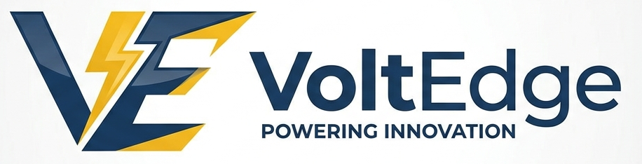

Marco du Plessis
Founder and Master Electrician
Marco has over 20 years in the electrical trade and holds a Master Electrician license. He is a registered member of the Electrical Contractors Association of South Africa.

Electrical | Solar | Pool and Pump Services
Learn more about who we are, where we started, and the team behind the work.
VoltEdge Solutions was founded in 2015 by Marco du Plessis, a qualified electrician who had spent nearly fifteen years working in the electrical trade across the Western Cape. He started the business because he wanted to offer a more reliable and honest service to people in his community.
What started as a one man operation quickly grew as word spread about the quality of the work and the fair pricing. By 2018 the team had grown to six people and started offering solar installation and geyser maintenance alongside the electrical work.
In 2021 the company expanded further into pool pumps, hot tub pumps, and water feature maintenance, making VoltEdge one of the few companies in Cape Town to offer all of these services in one place.
Today VoltEdge Solutions has a team of fourteen certified professionals and has completed over 1200 jobs across Cape Town and the surrounding areas.
To power homes and businesses smarter, greener, and more efficiently by delivering expert electrical, solar, and pump services with honesty and care. We commit to transparent pricing and certified workmanship on every single job.
To become the leading electrical and renewable energy service provider in the Western Cape by 2030, recognised for our quality, our commitment to sustainability, and our contribution to a greener South Africa.
Founder and Master Electrician
Marco has over 20 years in the electrical trade and holds a Master Electrician license. He is a registered member of the Electrical Contractors Association of South Africa.
Solar Systems Specialist
Ayesha is a certified solar PV installer with 8 years of experience designing and commissioning grid-tied and off-grid solar systems across the Western Cape.
Pool and Pump Technician
Ruan specialises in aquatic pump systems including pool pumps, spa pumps, and water feature pumps. He brings 11 years of hands-on pump maintenance experience.
Operations Manager
Thandi manages scheduling, client communication, and job coordination across the entire VoltEdge team with 6 years of experience in service operations.